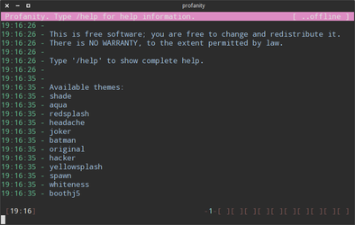
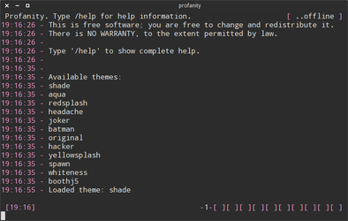
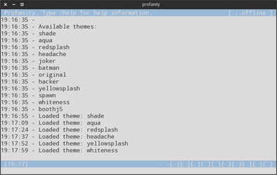
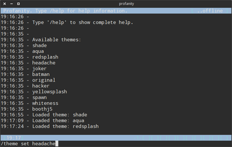

profanity
Dieser Artikel wurde für die folgenden Ubuntu-Versionen getestet:
Ubuntu 16.04 Xenial Xerus
Ubuntu 14.04 Trusty Tahr
Zum Verständnis dieses Artikels sind folgende Seiten hilfreich:
 Profanity
Profanity  ist ein von Irssi inspirierter Jabber/XMPP-Client für das Terminal oder die Konsole. Er lässt sich ebenso einfach bedienen wie ein IRC-Client, z.B. Irssi oder Weechat. Alternative Programme sind im Artikel Instant Messenger zu finden.
ist ein von Irssi inspirierter Jabber/XMPP-Client für das Terminal oder die Konsole. Er lässt sich ebenso einfach bedienen wie ein IRC-Client, z.B. Irssi oder Weechat. Alternative Programme sind im Artikel Instant Messenger zu finden.
Installation¶
profanity ist in den offiziellen Paketquellen enthalten. Das folgende Paket ist zu installieren:
profanity
 mit apturl
mit apturl
Paketliste zum Kopieren:
sudo apt-get install profanity
sudo aptitude install profanity
Verwendung¶
Profanity lässt sich von jedem beliebigen Terminal aus mit dem Befehl
profanity
starten [3]. Weitere Optionen und Parameter sind in der Manpage [4] ersichtlich.
Befehle¶
| Befehl | Funktion |
/help | Übersicht über verfügbare Hilfethemen anzeigen |
/win | Fensterliste ausgeben |
/connect user@server.de | Mit einem Account an einem XMPP-Server anmelden |
/msg kontakt@server.de | Eine Konversation mit einem Kontakt beginnen. |
/quit | Profanity beenden |
/disconnect | Verbindung zum XMPP-Server beenden |
/join raum@conference.server.de password raumpasswort | Einen Konferenzraum betreten (mit optionalem Passwort) |
/nick neuernick | Nicknamen ändern |
/leave | Konferenzraum verlassen |
/roster | Den sogenannten "Roster" anzeigen mit Kontakten und Gruppen |
Theme wechseln¶
Um profanity optisch anzupassen, kann man das Design anpassen. profanity kommt bereits mit mehreren Themes. Mit folgendem Befehl lassen sich die verfügbaren Themes auflisten:
/theme list
Das Design kann mit folgendem Befehl angewendet werden:
/theme load THEMENAME
Eine Auswahl der Designs, die bei profanity mitgeliefert werden:
|  |
| headache theme |
|  |
| shade theme |
|  |
| whiteness theme |
|  |
| redsplash theme |
Plugins¶
OMEMO¶
Profanity unterstützt OMEMO, was aber zusätzlich kompiliert werden muss. Dazu werden werden folgende Abhängigkeiten benötigt:
build-essential libssl-dev libffi-dev python-dev git
mit apturl
Paketliste zum Kopieren:
sudo apt-get install build-essential libssl-dev libffi-dev python-dev git
sudo aptitude install build-essential libssl-dev libffi-dev python-dev git
Dann wird das Plugin auf die lokale Festplatte geklont:
git clone https://github.com/ReneVolution/profanity-omemo-plugin.git
Im gerade erstellen Ordner, profanity-omemo-plugin, wird der Befehl
./install.sh
ausgeführt. Jetzt muss das Plugin in Profanity noch aktiviert werden. Profanity starten und folgenden Befehl ausführen:
/plugins load prof_omemo_plugin.py
OMEMO Befehle¶
| Befehl | Funktion |
/omemo (on|off) | Omemo aktivieren / deaktivieren (Standard on) |
/omemo status | Aktueller Status zu Omemo |
/omemo start [contact jid] | Einen Verschlüsselten Chat mit einem Kontakt beginnen |
/omemo end [contact jid] | Verschlüsselten Chat beenden |
Tastenkombinationen¶
| Funktion | Taste |
| Zu einem Gesprächsfenster wechseln | Alt + 1 bis Alt + 0 oder F1 bis F12 |
| Zum nächsten Gesprächsfenster wechseln | Alt + ← und Alt + → |
 Programmübersicht
Programmübersicht- Erstellt mit Inyoka
-
 2004 – 2017 ubuntuusers.de • Einige Rechte vorbehalten
2004 – 2017 ubuntuusers.de • Einige Rechte vorbehalten
Lizenz • Kontakt • Datenschutz • Impressum • Serverstatus -
Serverhousing gespendet von